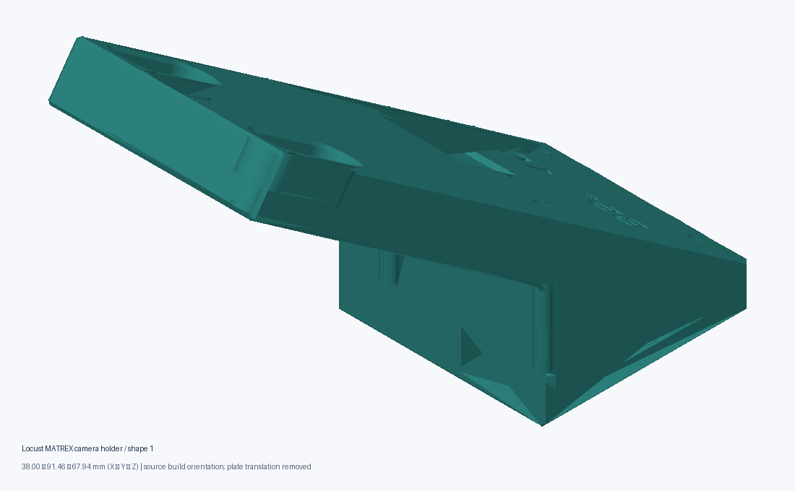
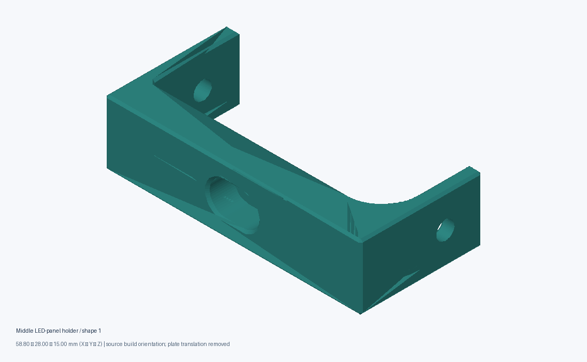
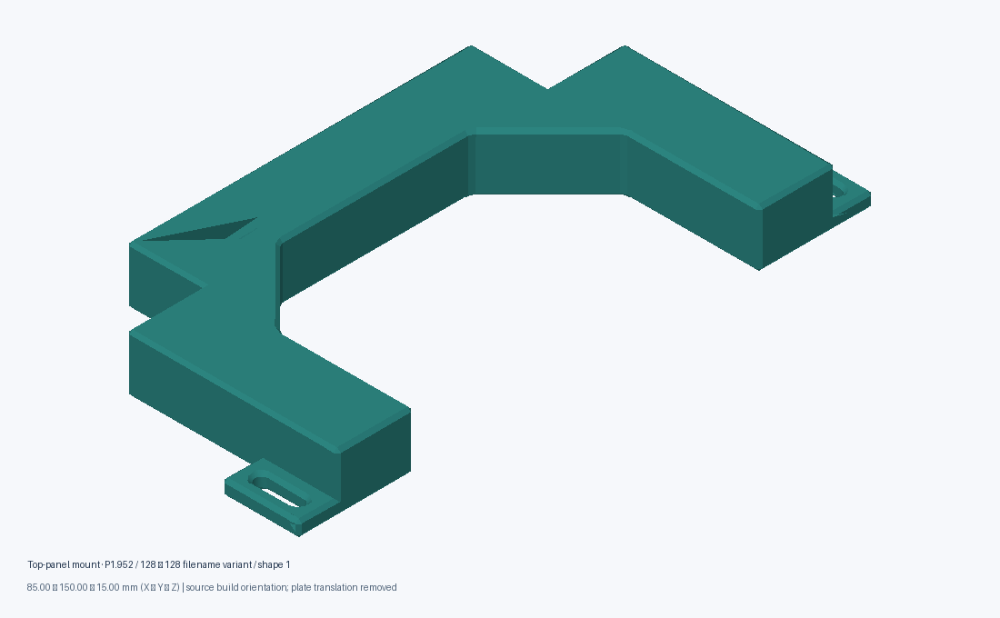
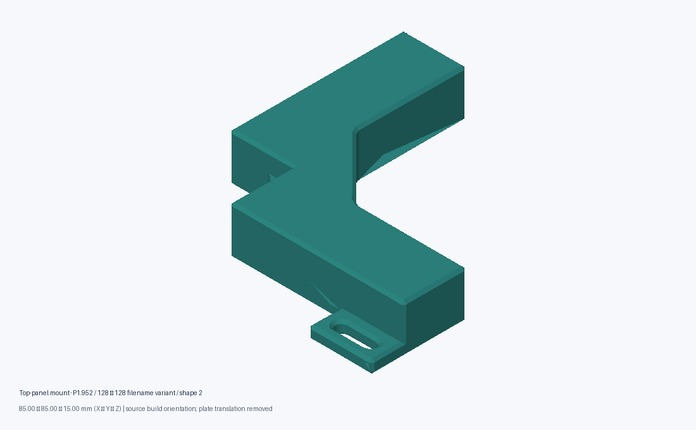
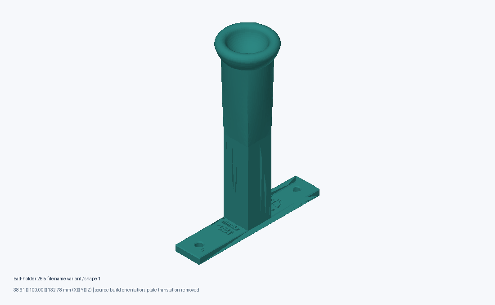
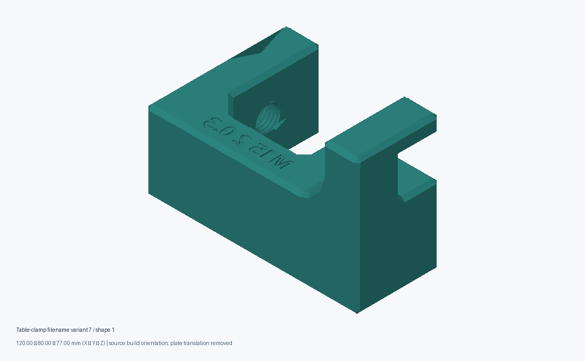
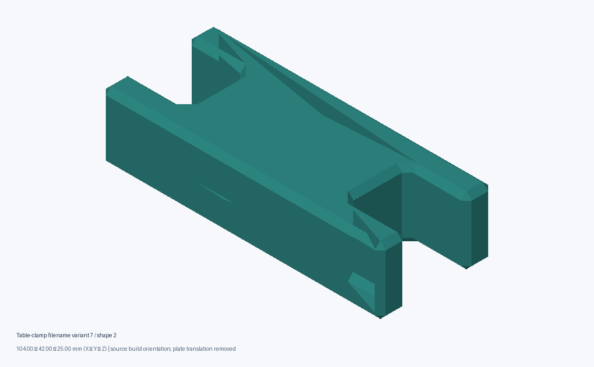
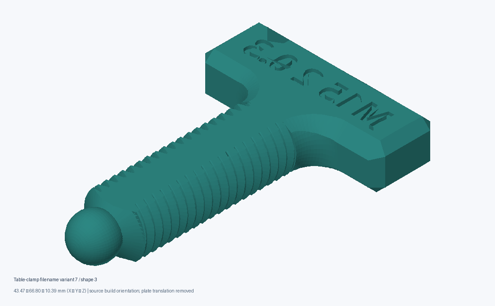
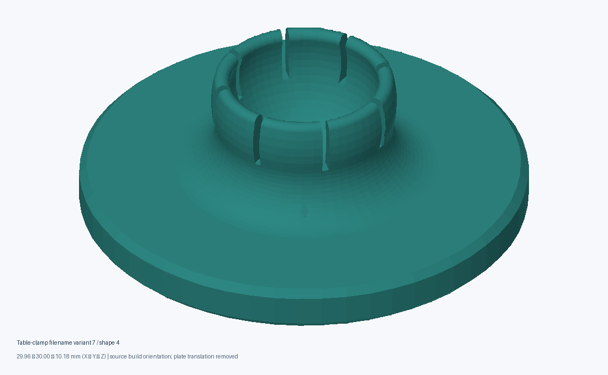

Hardware resources / Local review edition
Recover the parts.
Verify the apparatus.
Dimensioned geometry previews and download files for five recovered source groups. Use these to identify the right revision before printing or assembling your apparatus.
Measured part catalogue
All dimensions are X × Y × Z in millimetres after source build rotation. Plate translation was removed. Instance counts describe the original print plate, not quantities required for an apparatus.
Locust MATREX camera holder
Recovered source: Part Studio 1 - Camera Holder Locust MATREX.3mf

camera-locust-matrex-01
38.00 × 91.46 × 67.94 mm
6,768 triangles · 8 original plate instance(s)
Indexed boundary edges: 0; non-manifold edges: 0; degenerate triangles: 0.
Middle LED-panel holder
Recovered source: Led Panel Holder - Middle.3mf

panel-middle-01
58.80 × 28.00 × 15.00 mm
1,516 triangles · 1 original plate instance(s)
Indexed boundary edges: 0; non-manifold edges: 0; degenerate triangles: 0.
Top-panel mount · P1.952 / 128 × 128 filename variant
Recovered source: Top Panel Mount P1.952 128 128.3mf

top-panel-p1952-01
85.00 × 150.00 × 15.00 mm
1,784 triangles · 2 original plate instance(s)
Indexed boundary edges: 0; non-manifold edges: 0; degenerate triangles: 0.

top-panel-p1952-02
85.00 × 85.00 × 15.00 mm
1,170 triangles · 4 original plate instance(s)
Indexed boundary edges: 0; non-manifold edges: 0; degenerate triangles: 0.
Ball-holder 26.5 filename variant
Recovered source: Ball Holder 26.5-2.3mf

ball-holder-265-01
38.61 × 100.00 × 132.78 mm
19,560 triangles · 1 original plate instance(s)
Indexed boundary edges: 0; non-manifold edges: 0; degenerate triangles: 0.
Table-clamp filename variant 7
Recovered source: Table Clamp Part Studio-7.3mf

table-clamp-01
120.00 × 80.00 × 77.00 mm
33,754 triangles · 1 original plate instance(s)
Indexed boundary edges: 0; non-manifold edges: 0; degenerate triangles: 0.

table-clamp-02
104.00 × 42.00 × 25.00 mm
156 triangles · 1 original plate instance(s)
Indexed boundary edges: 0; non-manifold edges: 0; degenerate triangles: 0.

table-clamp-03
43.47 × 66.80 × 10.39 mm
44,394 triangles · 1 original plate instance(s)
Indexed boundary edges: 0; non-manifold edges: 0; degenerate triangles: 0.

table-clamp-04
29.96 × 30.00 × 10.18 mm
10,296 triangles · 1 original plate instance(s)
Indexed boundary edges: 0; non-manifold edges: 0; degenerate triangles: 0.
What was recovered?
The inventory records 154 filename-matched local candidates, including many incompatible or historical variants. Five representative groups are exported above. Selection is not a claim that these are the newest or mutually compatible versions. Other candidates stay inventory-only.
Before sharing or building
No redistribution license was found in the selected source metadata. This package grants no license. Confirm ownership and permission before publication. Source build orientation is retained as evidence, not a certified print recommendation. Read the illustrated assembly worksheet for the candidate BOM, scale checks, dry-fit stages and missing inputs.